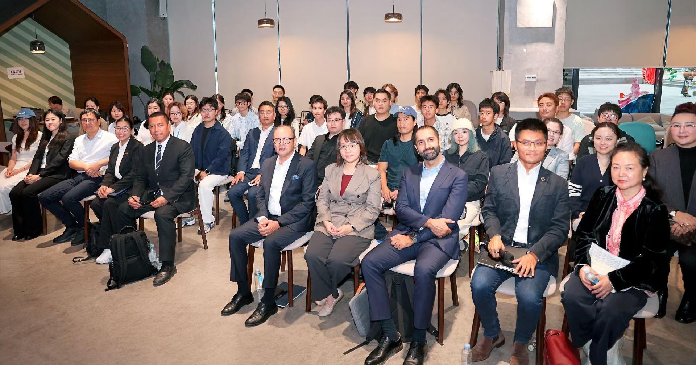
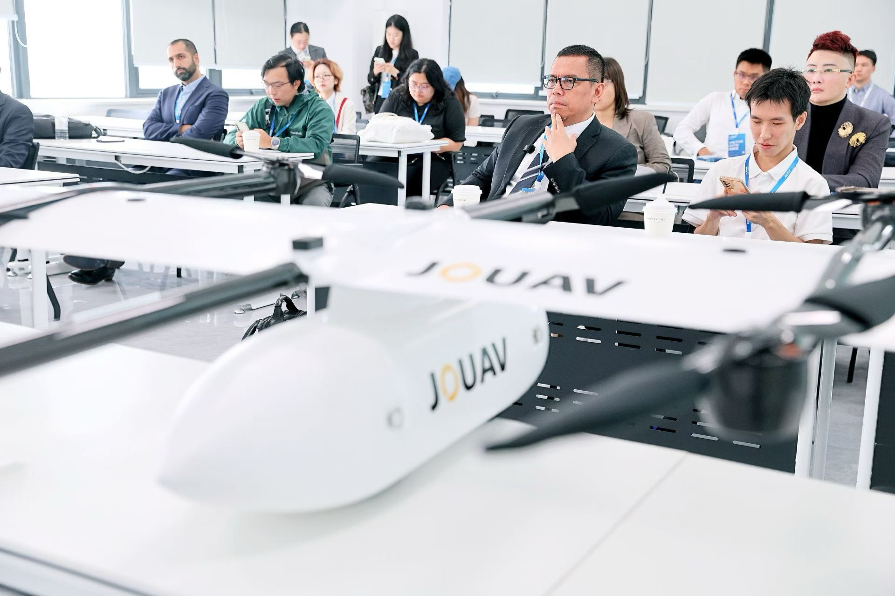
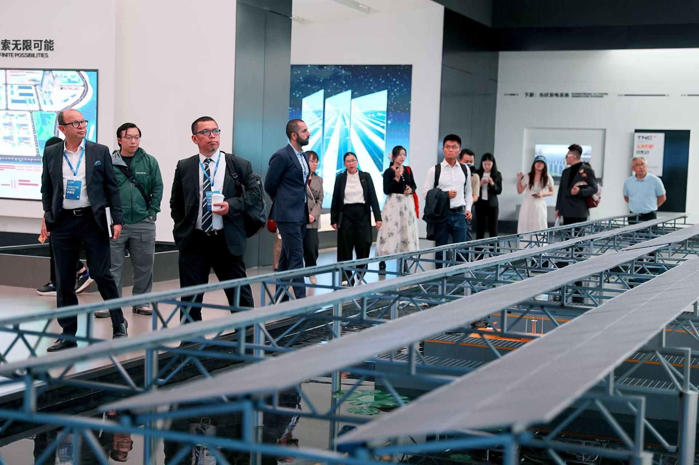
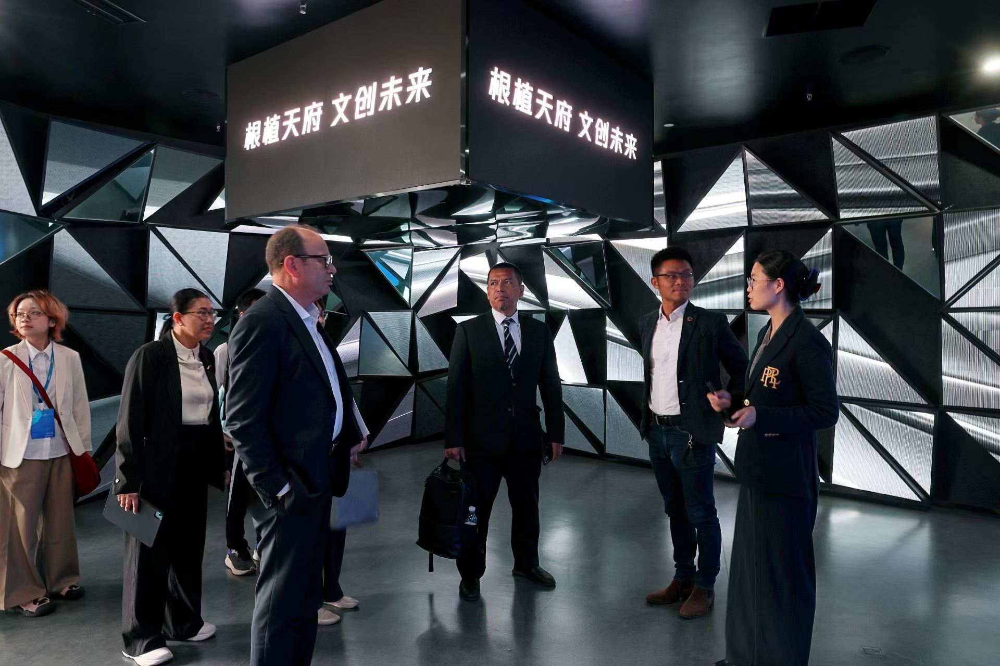
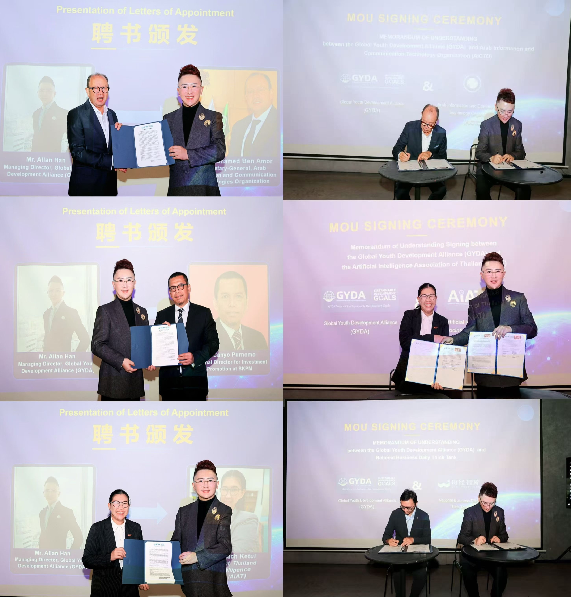

A Global City of Youth Aspirations: Chengdu Offers China’s Answer to Digital Multilateralism

Location
Tianfu Longdao Cultural and Creative Industry Park,
Chengdu, China
Date
October 14, 2026
On 14 October 2026, the Global Youth Innovation Salon, themed “A Global City of Youth Aspirations — Chengdu’s Answer to Digital Multilateralism”, concluded at the Tianfu Longdao Cultural and Creative Industry Park in Chengdu, China. Organized by NBD Think Tank with the participation of the Global Youth Development Alliance (GYDA), the Arab Information and Communication Technologies Organization (AICTO), the Artificial Intelligence Association of Thailand (AIAT), Indonesia's Investment Promotion Board (BKPM), the United Nations Project Office on Governance (UNPOG, under UN DESA), and the Qatar Foundation's Earthna Center, with academic support from the Sichuan Institute of Artificial Intelligence, the salon delivered concrete multilateral milestones. During the event, GYDA signed three bilateral memoranda of understanding (MOUs) with AICTO, AIAT, and NBD Think Tank respectively, and appointed three heads of international organizations and government bodies to its Advisory Board.
Morning: Grounding the Agenda on the Industrial Frontline
Moving beyond conventional conference halls, the salon positioned its morning session directly on Chengdu’s industrial frontline. International delegations inspected three key sites: the industrial drone hall at Zongheng Pengfei Technology Park, the Tongwei Solar Shuangliu Zero-Carbon Factory, and the Tianfu Longdao Digital Cultural and Creative Industry Service Platform.
At Zongheng Pengfei, Mr. Cahyo Purnomo, Head of Indonesia’s BKPM, noted that Indonesia’s archipelagic geography creates vast demand for industrial drones in agricultural protection and emergency response, unlocking direct market opportunities for Chengdu’s low-altitude enterprises in Southeast Asia.

At Tongwei Solar, Ms. Nongnuch Ketui, Vice President of AIAT, highlighted the alignment between Chengdu’s photovoltaic manufacturing scale and Thailand’s clean energy transition.

At Tianfu Longdao, Mr. He Zhaofeng, Executive Vice President of the Sichuan Institute of Artificial Intelligence, detailed an emerging AIGC industrial model connecting front-end IP confirmation, mid-end creative cost reduction, and global digital distribution.

Afternoon: Converging Regional Mechanisms into a Unified Youth Agenda
The afternoon plenary brought together leaders from intergovernmental bodies, national investment agencies, industry federations, and the United Nations to address digital inclusion and enterprise globalization. Eng. Mohamed Ben Amor, Secretary-General of AICTO, observed that global youth increasingly prioritize ecological quality and livability when choosing cities, a demand reflected in Chengdu’s park city environment. From a governance perspective, Ms. Carolit Grace V. Salvacion, Senior Programme Specialist at UNPOG, emphasized that inclusive park cities foster resilient urban ecosystems where young people actively participate in shaping public policy.
The event culminated in GYDA formalizing MOUs with AICTO, AIAT, and NBD Think Tank, while appointing Eng. Mohamed Ben Amor, Ms. Nongnuch Ketui, and Mr. Cahyo Purnomo to its Advisory Board. The agreements bring an intergovernmental ICT network of 22 Arab states, ASEAN’s AI industry, and a premier Chinese financial think tank onto a shared platform. Serving as an institutional bridge builder, GYDA connected regional policies and industrial assets into a coordinated global youth framework.
